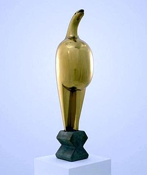

Secolul XX
Sculptură
Asemenea picturii, și sculptura secolului XX a trecut prin transformări revoluționare. În urma nenumăratelor influențe noi s-au născut stiluri noi, s-au folosit teme și materiale noi, rezultând creații de o varietate și forța uluitoare.
Începând de la renascentismul italian pâna la începutul secolului XX se aștepta din partea sculptorilor să reprezinte lumea mai mult sau mai puțin exact cum este (însă câteodata sentimental sau idealizat). Foarte rar sculptura reușea o exprimare personala, mai mult era arta unei comunități, decora clădiri, imortaliza evenimente majore, eroi naționali sau clienți bogați. Sculptorul cioplea piatra, modela materialul sau turna în bronz.
Schimbări
În secolul XX s-au rupt surprinzator de repede și brusc aceste tradiții. Lucrările celui mai mare sculptor al sfârșitului secolului XIX, Auguste Rodin, doar insinueaza aceste schimbări. Viziunea măreața a lui Rodin despre frumusețea umană și energie, vitalitate, ne face să-l privim ca pe un artist tradițional, însă arta lui se dovedește a fi modernă datorită utilizării texturilor antitetice, a jocurilor de lumini. Nimic nu a pregătit însă publicul pentru schimbările fundamentale care au fost introduse de mișcarea cubistă din Franța la începutul secolului XX. Doi artiști proeminenți, Pablo Picasso și prietenul lui, George Braque, au revoluționat această artă redând realitatea (o cafenea, o chitară, un chip) prin descompunerea ei în bucăți și reasamblarea ei, de multe ori sub forma unei mulțimi geometrice. Acesta a condus la idea fundamentală a artei moderne: arta este autonomă, creația nu reflectă realitatea ci este o nouă realitate care nu are nicio obligație față de lumea exterioară.
Efecte cubiste
Cubismul a fost la început o mișcare în pictură, dar a fost urmată foarte repede de sculptură: însuși Picasso a realizat sculpturi cubiste din anul 1909 și nu după mult timp au apărut sculptori emeriți ca Jacques Lipchitz (1891- 1973). Două efecte importante, însă aparent contradictorii, au influențat sculptura modernă: arta populară și eleganța funcțională a mașinilor moderne.
La începutul anilor 1900, europenii au început să aprecieze frumusețea și forța artei altor culturi, mai ales sculpturile popoarelor din Africa tribală și din insulele Oceanului Pacific. Aceasta a încurajat sculptorii secolului XX să se îndepărteze de realismul superficial și să transmită trăiri, sentimente elementare, mistere, prin arta lor. Arta primitivă avut un efect foarte mare asupra americanului Jacob Epstein (1880-1959). S-a stabilit în Anglia și creațiile sale "dezgustătoare" și "obscene" au scandalizat publicul din 1908 până cu mult după cel de-al doilea război mondial. Primitivismul a îndemnat numeroși sculptori să-și simplifice formele și să se apropie cât mai mult de abstractul pur, dar fără ca să se despartă de o temă generală, cuprinzătoare. Așa a fost și cu Hans Arp (1887-1966), care a realizat sculpturi de piatră șlefuite, care păreau doar pietre extrem de mari, dar care dădeau o impresie captivantă de viu-organic.
Sculptorul român Constantin Brâncuși (1876-1957) (
Măiastra

,
Muza adormită
 ,
Domnişoara Pogany
,
Domnişoara Pogany
 ,
Pasărea măiastră
,
Pasărea măiastră
 ,
Coloana infinitului
,
Coloana infinitului
 ) a creat statui de bronz aerodinamice, cu suprafețeIe șlefuite, de exemplu renumita serie de Păsări, care în ciuda formelor liniare, clare inspira mister.
) a creat statui de bronz aerodinamice, cu suprafețeIe șlefuite, de exemplu renumita serie de Păsări, care în ciuda formelor liniare, clare inspira mister.
Cel mai mare sculptor englez al secolului, Henry Moore (1898-1986) a creat modele simplificate sau abstracte, ale căror cavități, spații interioare au uluit de multe ori publicul.
Sculptura constructivistă
Futuriștii italieni, de pilda Umberto Boccioni, au lucrat într-un spirit total opus. Ei au redat dinamismul, ritmul alert al vieții moderne. Artiștii constructiviști, cu o concepție la fel de modernă dar cu țeluri nepersonale, ca de exemplu Naum Gabo (1890-1977) au conceput niște creații, ale caror eleganță și executare precisă amintea mai mult de modele științifice, de mașini. Constructiviștii au fost importanți inovatori, au utilizat materiale industriale (plastic, sticlă, oțel) acestea nefiind modelate sau sculptate, ci mai degrabă compuse, s-au realizat structuri scheletice în locul tradiționalului complex compact de statui.
Anti-artă
Dadaiștii cu o înclinare anarhică au rupt radical orice legătură cu tradițiile, au creat voit compoziții "anti-artă" provocatoare de scandal, de exemplu "asamblări" realizate din obiecte alese întâmplător sau din deșeuri. Un exemplu renumit este pisoarul expus de dadaistul francez Marcel Duchamp, acesta anunțând că datorită alegerii făcute obiectul este considerat deja piesă de artă. Argumentările de acest fel au condus la declarații de genul: orice poate fi artă dacă e făcut de artiști. Revoluția din artă, începută de dinaintea anilor 1914 a eliberat fiecare creator proeminent. Mulți dintre cei mai talentați sculptori ai secolului XX au reprezentat tot universul uman în creațiile lor, dar au desfigurat sau au simplificat formele fără ezitare, pentru a crește intensitatea afectivă. Această tendință generală, numit expresionism, caracterizează și opera lui Alberto Giacometti (1901-1988), ale cărui statuete, de grosimea unei lame erau cuprinse de remușcări, de îngrijorare. După 1945, marea majoritate a publicului a acceptat tot mai mult sculptura modernă. În realizarea scheletelor metalice, un pas important l-a constituit înlocuirea turnării metalului cu sudura. Pionierul acestui gen a fost americanul David Smith, care lucrase ca sudor, cu ani în urmă. A colorat câteva dintre creațiile sale, aceasta practică fiind preluată de Anthony Caro, care a apărut în anii 60 ca proeminent sculptor englez de metale.
Arta pop
La sfârșitul anilor 50, pop-art -ul a devenit cel mai cunoscut curent artistic. Creații caracteristice au fost cutiile de bere din bronz ale lui Jasper Johns (n. 1.930), uriașii hamburgeri din plastic și cornetele de înghețată. Așa cum reiese din cele prezentate anterior, categoriile tradiționale de artă, cum sunt pictura și sculptura, devin în ultimii ani tot mai puțin actuale. Însă sculptura poate uimi oamenii și în 1990, când Darnien Hirst a expus în vase cu formol cadavre de animale, ca sculpturi.